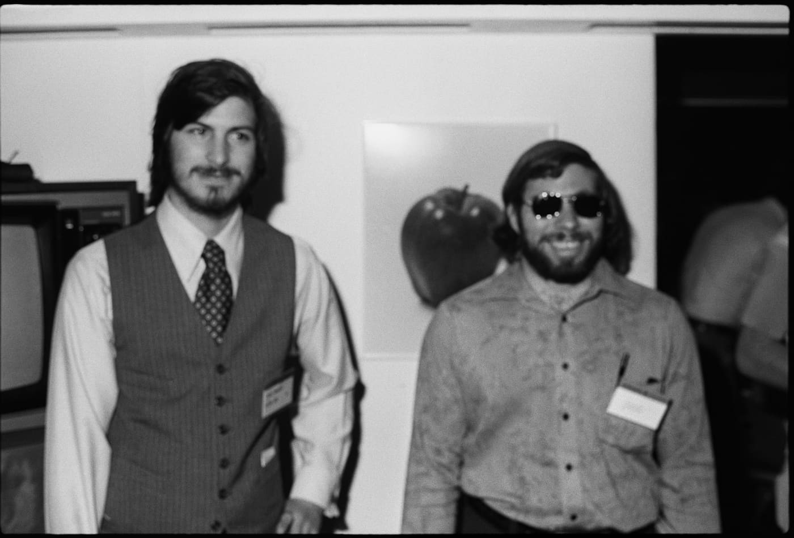
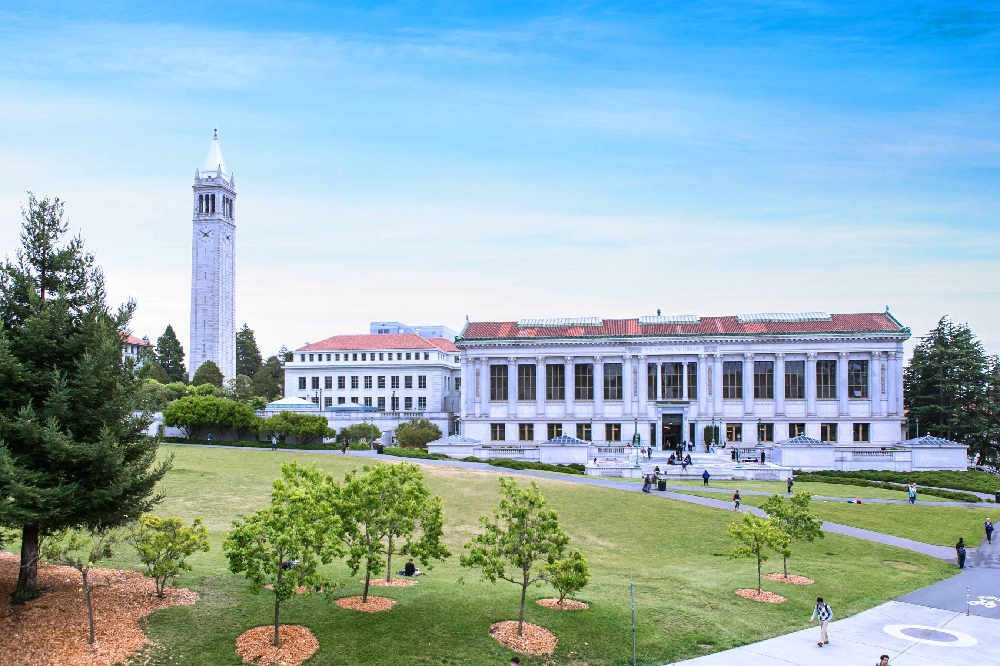
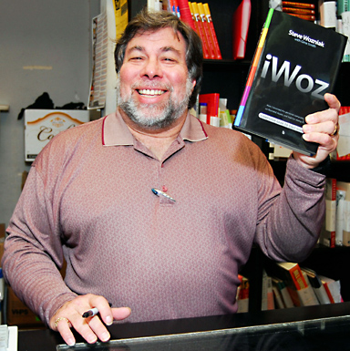
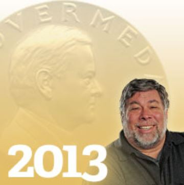
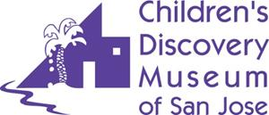

Timeline
1976:
Wozniak and Steve Jobs founded Apple Computer Inc.
1981:
Woz went back to UC Berkeley to finish his degree in electrical engineering/computer science.
1982 - 1983:
He sponsored US festivals when he founded the company Unuson, an abbreviation of “unite us in song”, which was initially intended to celebrate evolving technologies, but ended up as a technology exposition and a rock festival as a combination of music, computers, television, and people.
1985:
 President Ronald Reagan handed Woz the National Medal of Technology award for his achievements at Apple.
President Ronald Reagan handed Woz the National Medal of Technology award for his achievements at Apple.
2006:
He published his New York Times best-selling autobiography “iWoz: From Computer Geek to Cult Icon.”
2013:
Hoover Medal award, a prestigious honour given for “outstanding extra-career services by engineers to humanity,” and was admitted into the IndustryWeek Manufacturing Hall of Fame.
2015:
Woz received the Legacy for Children Award from the Children’s Discovery Museum of San Jose, honouring individuals whose legacy has positively impacted the learning and lives of the next generation.
2017:
He co-founded Woz U, described to be a postsecondary education and training platform focused on software engineering and technology development. Furthermore, he has recently co-founded Efforce, a platform that leverages disparate applications of blockchain technology.
Stephen Gary Wozniak, known professionally as “Steve Wozniak” or “Woz”, is an American electronics engineer and a co-founder of Apple Computer alongside Steve Jobs and Ronald Wayne, born August 11, 1950, in San Jose, California. In 1974, Woz brought the world the first commercially successful personal computer, the Altair, at a small firm named MITS. Meanwhile, he also influenced the popular Macintosh, and two years later founded Apple Computer Inc. with his Apple I personal computer. His next success came the following year where he introduced his Apple II personal computer, featuring a central processing unit, a keyboard, colour graphics, and a floppy disk drive. He is now listed as the sole inventor of four Apple patents and has earned ten Honorary Doctor of Engineering degrees throughout the years. His career has explored various business and philanthropic ventures regarding computer capabilities in schools and experiential learning that encourages creativity and innovation by students. He is satisfied with the outcome of his career as he states that his “goal wasn’t to make a ton of money, it was to build good computers.” Finally, he has adopted the Los Gatos School District after making significant investments of both his time and resources in education.

Did you know that Woz...
- is a Segway Polo Player
- earned his Ham Radio license in the 6th grade
- has 3 adult children, 5 grandchildren and 4 furry Bichon Frise dogs
- has appeared in “The Big Bang Theory” (2010)
- was portrayed by Joey Slotnick in the 1999 movie Pirates of Silicon Valley
- competed on Season 8 of Dancing with the Stars with Karina Smirnoff as his partner